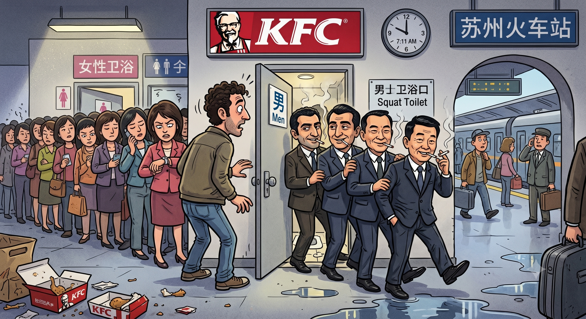

Space and Time Constraints
Originally written March 2010 • Uploaded to Facebook on Mar 22, 2010, 7:11 AM

I have already spoken a bit about the Corleone School of Business English, along with its corporate partner institutions scattered all over the world. Yesterday, I encountered a typical situation where the Corleone style of business is famously conducted: in the public bathroom.
Our group was waiting at the station in Suzhou for a train out of the city. We had been sitting around the terminal for a while—killing time by taking pictures, people-watching, and fending off the usual local beggars asking for spare change. Eventually, I decided it was a prime window to go use the restroom. Following the sacred tradition of long-distance travelers everywhere, I headed straight for the nearest KFC, operating under the assumption that the chicken is cheap and the bathrooms are generally clean. Sort of.
I reached the back hallway only to find a line of at least twenty women waiting on their side, while the men's room had absolutely no queue in sight. I pushed the door open, completely unprepared for the spectacle waiting on the other side. As the door swung back, I was faced with a performance identical to that classic circus routine where eight clowns somehow manage to crawl out of a microscopic automobile—preferably a vintage VW Beetle.
Stepping in, eight guys all meticulously dressed in nice, sharp business suits slowly filed past me, one by one. Every single one of them had a cigarette dangling casually from his lips, looking for all the world as if they had just thrown an absolute rager in there. Bracing myself, I fully expected to walk into the stall and discover some poor debtor who hadn't paid up, completely beat to a pulp. Instead, it was just a standard public restroom—thick with smoke like your average nightclub, though its sheer lack of scale was what left me amazed.
In total, I highly doubt the entire floor plan cleared a single square meter, yet these guys emerged from the box without a single splash. The most puzzling part of the logistics was that four of them explicitly filed out of the microscopic stall containing the squat toilet. I genuinely wonder if Cirque du Soleil will ever look into licensing this particular spectacle for the stage.